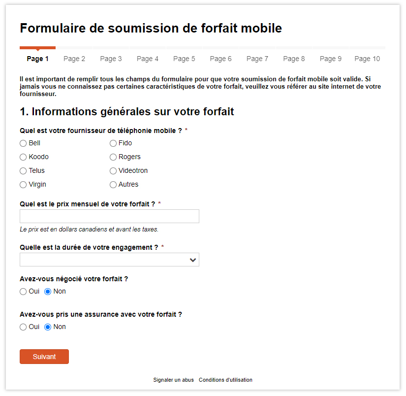
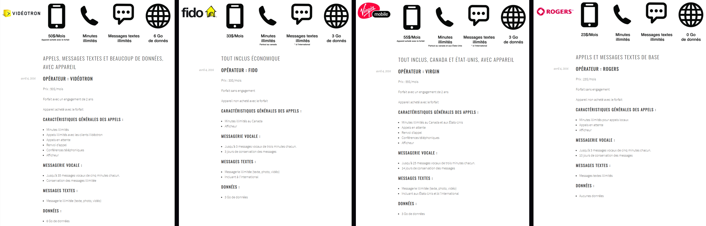

Web Platform To
Compare Mobile Plans
Helping consumers to negociate better mobile plans
with their telecom provider.
Summary
In Canada, the mobile plan market is incredibly confusing, often leaving consumers at a loss when it comes the time to select a mobile plan. The promotions offered by operators are difficult to understand and compare and, on top of that, you have to negotiate to get the best deals. Therefore, consumers often end up overpaying for mobile plans that still don’t meet their needs. Option Mobile is a website that aimed to solve this problem. By offering a platform that allows consumers to strategically compare their mobile plans, consumers could pay less for more.
My Role
Conducting field research on consumer habits, identifying problems among Canadian consumers, prototyping solutions, designing a website, presenting the results to the client
Tools
Wordpress, Javascript, CSS, Photoshop, Illustrator, InDesign, Lightroom, Premiere Pro
Research
This project was carried out in partnership with Option Consommateurs, an organization that defends the rights of consumers. The original objective of this project was to research and develop new services for Option Consommateurs that could help citizens to consume more intelligently.
To identify the difficulties faced by Canadian consumers, online and field research were conducted. The online research consisted of reading and analyzing various websites and forums where users discussed issues related to the consumption of goods and services. The field research took the form of observations in shopping malls, and short interviews with customers and employees of various stores in the greater Montreal area.
Diagnostics
The research phases made it possible to establish five major diagnostics regarding the consumption habits of Canadians.
- Consumers are unfamiliar with the contexts, both physical and interpersonal, in which they are required to complete their purchases.
- Consumers tend to lose sight of their real needs and budgets.
- Commercial displays are sometimes difficult to decipher.
- Consumers find it difficult to compare products.
- The use of existing consumer aids (coupons, flyers, online applications) is complex and often laborious.
Helping consumers to get better mobile plans
From these diagnostics, the project focused on the difficulty-level for the average Canadian consumer to select an affordable mobile plan that meets their needs. Mobile plans are difficult to compare, and their promotions are designed to confuse consumers into spending as much money as possible.
Prototyping

The prototyping of a solution (regarding the difficulty experienced by consumers selecting a mobile package) was done in two steps. First, an ideation phase where a solution catalogue was developed helped to frame the solution in the form of a website. This website would allow users to submit their current mobile plan, and to easily compare with other options to identify which would be the best-suited for their needs.
Subsequently, the form allowing users to submit their mobile package on the website was developed. An initial paper version of the form was tested with about 50 participants to validate the questionnaire. Then, the final version was designed online using the Cognito Forms platform and JavaScript programming.
Website
Option Mobile's website is divided into three sections. First, it offers a list of tips to help negotiate a mobile plan. Second, it offers the possibility to submit your current plan to make it public for other users. Finally, the site contains a list of the best plans submitted by users and then analyzed by experts.
Tips to negotiate your mobile plan
The following were proposed tips to help negotiate one's mobile plan. These tips are available (in French) on Option Mobile's website.
- Determine the options you need (number of minutes, text messages, data, etc.). This helps you choose a plan that suits your habits.
- Having your own unlocked device is a great bargaining chip. However, it can sometimes be advantageous to change your device when there are good promotions.
- Compare offers from different providers. If you find a better deal from a particular provider, your carrier won't want to lose you as a customer.
- Keep an eye out for signing bonuses, some promotions can be very attractive.
- Loyalty to your company may help you get lower prices.
- The cancellation department often has more leeway to negotiate than the customer service department. Call them directly before you switch companies to see what they are willing to offer you.
- The final choice is always yours. Don't hesitate to change carriers if you are not happy with your current one.
Submitting a mobile plan
If an Option Mobile user thinks their current mobile plan is a good deal, they can submit the details of their plan online. Option Mobile’s website contains a form that allows collecting all the details of a mobile plan. All plans submitted on the site are analyzed, and Option Mobile's team of experts then publishes the mobile plans deemed to be the most advantageous.
Mobile Plans Comparator
The best mobile plans are regularly updated and published on Option Mobile's website. Here are some examples (in French).
